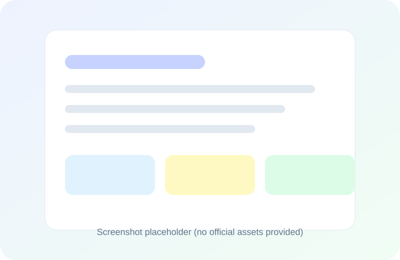
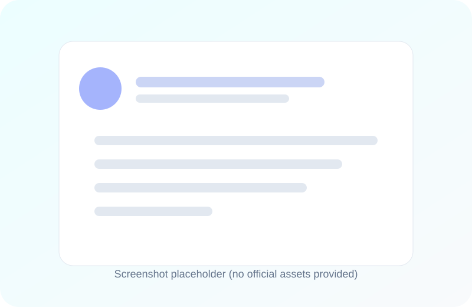
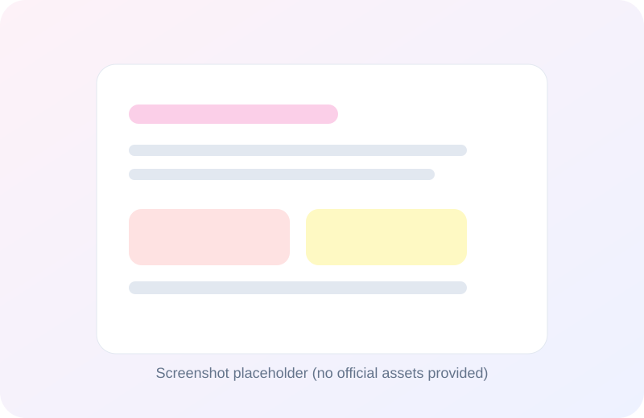

Never forget a promise. Keep every commitment private and offline.
Pactora is a high-performance, privacy-centric mobile app built for people who value reliability and personal accountability. Track promises, borrowed items, and informal IOUs without cloud sync, accounts, or servers.

Relational memory for everyday commitments
Pactora keeps commitments connected to people so your trust stays visible.
Offline by design
No login, no servers, and no cloud sync. Your data stays entirely on your device.
People-first tracking
Every promise, item, and IOU is linked to a person for a complete relationship history.
Built for speed
Flutter + Isar keep searches and lists fast with sub-millisecond queries.
Core features
Specialized modules for promises, items, and money—plus a local people CRM.
Promises
Track commitments made by you or others with categories, priorities, and smart local reminders.
Borrow & Lend
Log physical items with photo proof, condition notes, and expected return dates.
Money IOUs
Manage informal debts with partial payments, currency support, and settlement status.
People management
See a consolidated timeline of promises, items, and money for each person.
Global search
Instantly search across all records and revisit the activity timeline.
Manual backups
Export and import your data as a JSON file whenever you choose.
Screenshots
These placeholders represent the dashboard, lists, and people profiles.


How Pactora works
A simple flow designed for fast entry and clear accountability.
- Complete the onboarding walkthrough and allow notifications for reminders.
- Add people you interact with in the People list.
- Use the quick add button to log a promise, borrowed item, or IOU.
- Track statuses (pending, overdue, done) and review the activity timeline.
- Back up your data anytime from Settings > Data & Backup.
Why use Pactora
Designed for trust, privacy, and the everyday promises that matter most.
100% private
No cloud sync or accounts. Data never leaves your device.
Relationship-focused
Everything is tied to people, not just tasks, so you see the full context.
Purpose-built modules
Promises, borrow/lend, and money each have dedicated logic and workflows.
FAQ
Answers based on the official support documentation.
Your data is stored locally in an encrypted Isar database on your phone. It never leaves your device.
Go to Settings > Data & Backup and tap “Export Backup.” This creates a JSON file you can store anywhere.
Yes. Core features are fully offline. Internet is only required to load banner ads in the free version.
Not automatically. You can manually export a backup and import it on another device.
Open Settings and purchase “Pactora Plus” to remove all banner ads.
Ready to keep every commitment on track?
Pactora stays fast, offline, and private—perfect for students, freelancers, and privacy advocates.